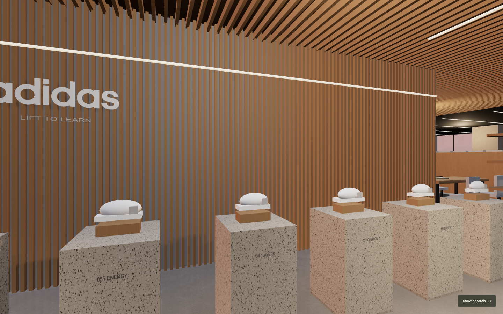
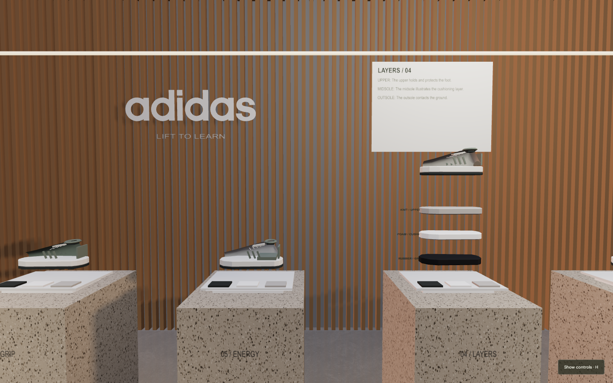
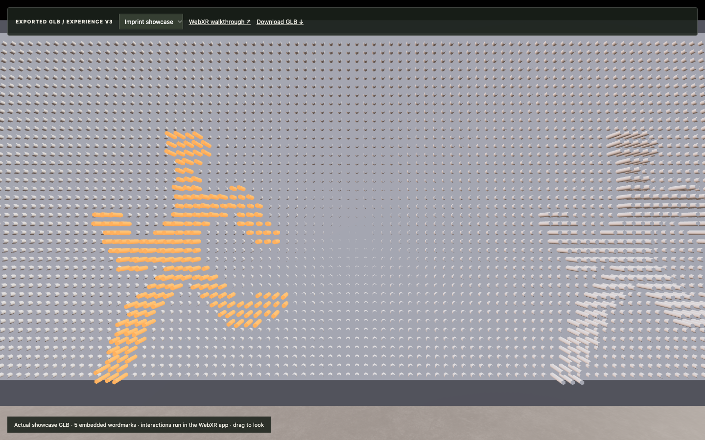
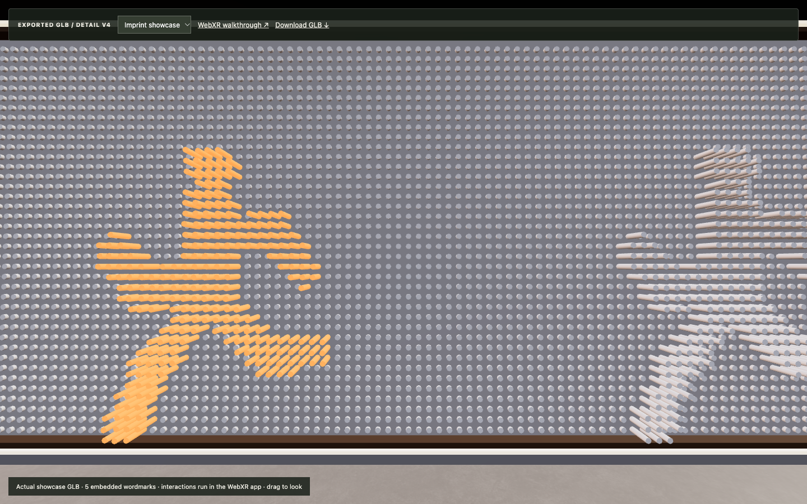
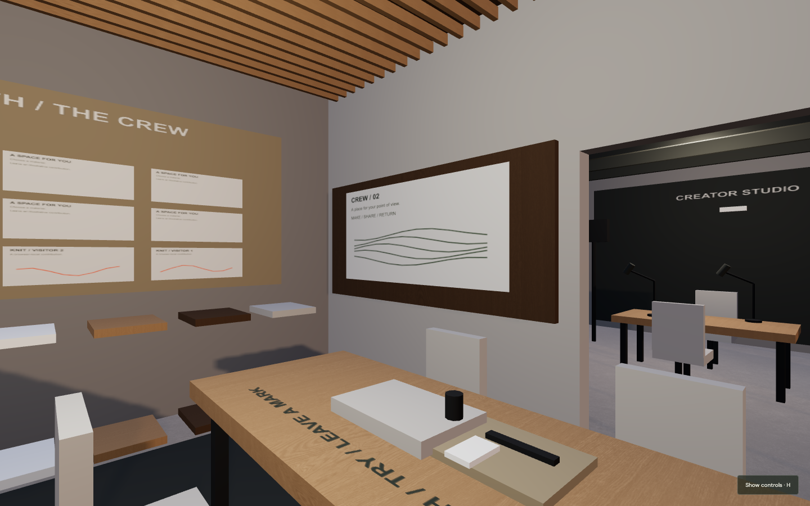
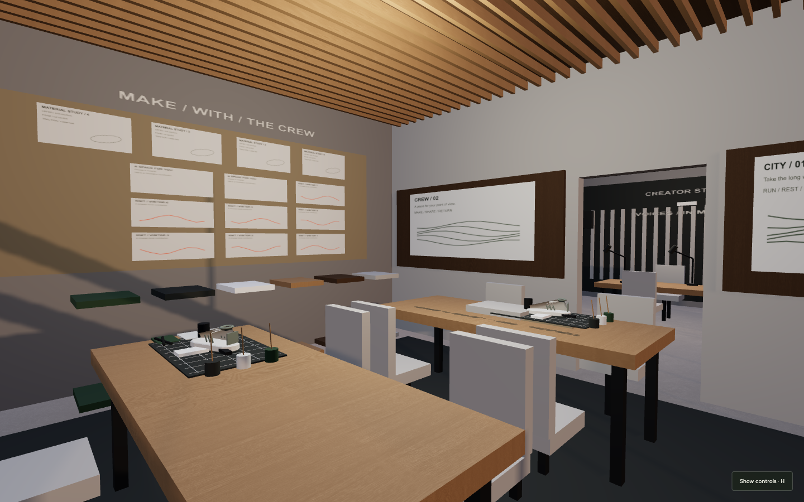
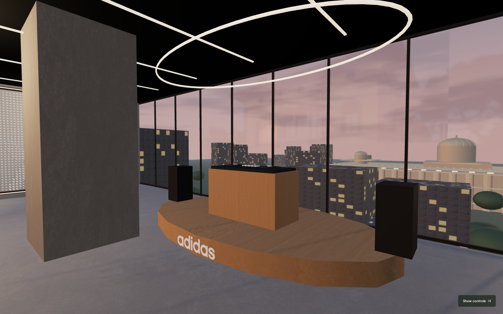
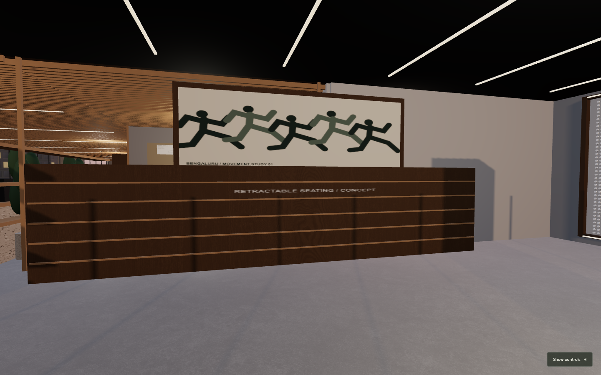

3 November 2026. Saved Chromium views at 1440 × 900. Before/after views illustrate detail changes; camera positions and activation states vary. They are not pixel-parity comparisons.
Open interactive Lab · Culture night · Inspect actual GLB · Download GLB








30 browser checks passed. 278,602 source triangles; 268,854 exported triangles. Physical capture, mechanical retraction, occupancy and Quest hardware remain unverified.